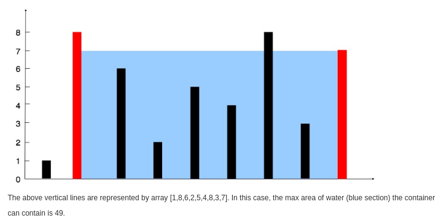

Table of Contents
1 Stack
1.1 Valid Parentheses
class Solution { public: bool isValid(string s) { for (auto c : s) { auto ret = parentheses_.find(c); if (ret == parentheses_.end()) { stack_.push(c); continue; } auto pare = stack_.empty() ? '#' : stack_.top(); stack_.pop(); if (pare != ret->second) { return false; } } return stack_.empty(); } private: stack<char> stack_; const map<char, char> parentheses_ = {{')', '('}, {']', '['}, {'}', '{'}}; };
1.2 Remove Outermost Parentheses
class Solution { public: string removeOuterParentheses(string S) { string s; for (const auto &c : S) { if (c != ')') { if (!c_stack_.empty()) { s.push_back(c); } c_stack_.push(c); continue; } char top = c_stack_.top(); c_stack_.pop(); if (!c_stack_.empty()) { s.push_back(c); } } return s; } private: stack<char> c_stack_; };
1.3 Baseball Game
class Solution { public: int calPoints(vector<string> &ops) { vector<int> v; for (const auto &opt : ops) { if (opt == "C") { v.pop_back(); } else if (opt == "D") { v.push_back(v.back() * 2); } else if (opt == "+") { v.push_back(v.back() + v[v.size() - 2]); } else { v.push_back(stoi(opt)); } } return accumulate(v.begin(), v.end(), 0); } };
2 algorithms
2.1 Two Sum
给定一个整数数组和一个目标值，找出数组中和为目标值的两个数。 你可以假设每个输入只对应一种答案，且同样的元素不能被重复利用。
给定 nums = [2, 7, 11, 15], target = 9 因为 nums[0] + nums[1] = 2 + 7 = 9 所以返回 [0, 1]
#include <unordered_map> #include <iostream> #include <vector> using namespace std; class Solution { public: vector<int> twoSum(vector<int>& nums, int target) { unordered_map<int, int> m; vector<int> result; for(int i = 0; i<nums.size(); i++){ // 找不到第二个 if (m.find(nums[i]) == m.end() ) { // 存储第一个值作为第二个的键 m[target - nums[i]] = i; }else { // 找到第二个 result.push_back(m[nums[i]]); result.push_back(i); break; } } return result; } }; int main() { int nums_array[] = {11, 7, 2, 15}; vector<int> nums(nums_array, nums_array + 4); int target = 9; Solution solution; auto result = solution.twoSum(nums, target); for (auto i = 0; i < result.size(); ++i) { cout << result[i] << " "; } return 0; }
1 2
2.2 两数相加
给定两个非空链表来表示两个非负整数。位数按照逆序方式存储，它们的每个节点只存储单个数字。将两数相加返回一个新的链表。 你可以假设除了数字 0 之外，这两个数字都不会以零开头。
输入：(2 -> 4 -> 3) + (5 -> 6 -> 4) 输出：7 -> 0 -> 8 原因：342 + 465 = 807
#include <iostream> using namespace std; struct ListNode { int val; ListNode *next; ListNode(int x) : val(x), next(NULL) {} }; class Solution { public: ListNode *addTwoNumbers(ListNode *l1, ListNode *l2) { int x = 0, y = 0, carry = 0, sum = 0; ListNode *h = NULL, **t = &h; while (l1 != NULL || l2 != NULL) { x = getValueAndMoveNext(l1); y = getValueAndMoveNext(l2); sum = carry + x + y; ListNode *node = new ListNode(sum % 10); *t = node; t = (&node->next); carry = sum / 10; } if (carry > 0) { ListNode *node = new ListNode(carry % 10); *t = node; } return h; } private: int getValueAndMoveNext(ListNode *&l) { int x = 0; if (l != NULL) { x = l->val; l = l->next; } return x; } }; ListNode *createList(int arr[], int len) { if (len == 0) { return nullptr; } ListNode *list = new ListNode(arr[0]); ListNode *temp = list; for (auto i = 1; i < len; ++i) { temp->next = new ListNode(arr[i]); temp = temp->next; } return list; } int main(int argc, char *argv[]) { int arr1[] = {2, 4, 3}; ListNode *l1 = createList(arr1, 3); int arr2[] = {5, 6, 4}; ListNode *l2 = createList(arr2, 3); Solution solution; ListNode *l = solution.addTwoNumbers(l1, l2); while (l) { cout << l->val << " "; l = l->next; } return 0; }
7 0 8
2.3 无重复字串的最长子串
给定一个字符串，找出不含有重复字符的最长子串的长度。
使用 map 存储字符串的索引
#include <iostream> #include <string> #include <map> using namespace std; class Solution { public: int lengthOfLongestSubstring(string s) { map<char, int> m; int nextRepeatPos= -1; int maxLen = 0; for (auto i = 0; i < s.size(); ++i) { if (m.find(s[i]) != m.end() && nextRepeatPos < m[s[i]]) { nextRepeatPos = m[s[i]]; } if (i - nextRepeatPos > maxLen) { maxLen = i - nextRepeatPos; } m[s[i]] = i; } return maxLen; } }; int main(int argc, char *argv[]) { Solution solution; cout << solution.lengthOfLongestSubstring(string("abba")) << endl; return 0; }
2
2.4 两个排序数组的中位数
给定两个大小为 m 和 n 的有序数组 nums1 和 nums2 。 请找出这两个有序数组的中位数。要求算法的时间复杂度为 O(log (m+n)) 。 你可以假设 nums1 和 nums2 不同时为空。
// example nums1 = [1, 3] nums2 = [2] 中位数是 2.0 // example nums1 = [1, 2] nums2 = [3, 4] 中位数是 (2 + 3)/2 = 2.5
#include <iostream> #include <vector> using namespace std; class Solution { public: double findMedianSortedArrays(vector<int> &nums1, vector<int> &nums2) { int m = nums1.size(); int n = nums2.size(); if (m > n) { // to ensure m <= n swap(nums1, nums2); swap(m, n); } int iMin = 0, iMax = m, halfLen = (m + n + 1) / 2; while (iMin <= iMax) { int leftHalf = (iMin + iMax) / 2; int rightHalf = halfLen - leftHalf; if (leftHalf < iMax && nums2[rightHalf - 1] > nums1[leftHalf]) { iMin = leftHalf + 1; } else if (leftHalf > iMin && nums1[leftHalf - 1] > nums2[rightHalf]) { iMax = leftHalf - 1; } else { int maxLeft = 0; if (leftHalf == 0) maxLeft = nums2[rightHalf - 1]; else if (rightHalf == 0) maxLeft = nums1[leftHalf - 1]; else maxLeft = max(nums1[leftHalf - 1], nums2[rightHalf - 1]); if ((m + n) % 2 == 1) return maxLeft; int minRight = 0; if (leftHalf == m) minRight = nums2[rightHalf]; else if (rightHalf == n) minRight = nums1[leftHalf]; else minRight = min(nums2[rightHalf], nums1[leftHalf]); return (maxLeft + minRight) / 2.0; } } return 0.0; } }; int main(int argc, char *argv[]) { Solution solution; vector<int> nums1 = {1, 3}; vector<int> nums2 = {2}; cout << solution.findMedianSortedArrays(nums1, nums2) << endl; return 0; }
2
2.5 最长回文子串
给定一个字符串 s，找到 s 中最长的回文子串。你可以假设 s 的最大长度为1000。
example 1 输入: "babad" 输出: "bab" 注意: "aba"也是一个有效答案。 example 2 输入: "cbbd" 输出: "bb"
#include <iostream> #include <vector> using namespace std; class Solution { public: string longestPalindrome(string s) { string T = preProcess(s); int n = T.length(); int *p = new int[n]; int C = 0, R = 0; for (auto i = 0; i < n - 1; ++i) { int i_mirror = 2 * C - i; p[i] = (R > i) ? min(R - i, p[i_mirror]) : 0; while (T[i + 1 + p[i]] == T[i - 1 - p[i]]) { p[i]++; } if (i + p[i] > R) { C = i; R = i + p[i]; } } int maxLen = 0; int centerIndex = 0; for (auto i = 1; i < n - 1; i++) { if (p[i] > maxLen) { maxLen = p[i]; centerIndex = i; } } delete[] p; return s.substr((centerIndex - 1 - maxLen) / 2, maxLen); } private: string preProcess(string s) { int n = s.length(); if (n == 0) return "^$"; string ret = "^"; for (auto i = 0; i < n; ++i) { ret += "#" + s.substr(i, 1); } ret += "#$"; return ret; } }; int main(int argc, char *argv[]) { Solution solution; string str("babad"); cout << solution.longestPalindrome(str) << endl; return 0; }
bab
2.6 Z 字形变换
将字符串 "PAYPALISHIRING" 以Z字形排列成给定的行数：
P A H N A P L S I I G Y I R
之后从左往右，逐行读取字符："PAHNAPLSIIGYIR" 实现一个将字符串进行指定行数变换的函数:
string convert(string s, int numRows);
example 1 输入: s = "PAYPALISHIRING", numRows = 3 输出: "PAHNAPLSIIGYIR" example 2 输入: s = "PAYPALISHIRING", numRows = 4 输出: "PINALSIGYAHRPI" 解释: P I N A L S I G Y A H R P I
#include <iostream> #include <string> using namespace std; class Solution { public: string convert(string s, int numRows) { if (numRows == 1) return s; int strLen = s.size(); string value; int cycleLen = numRows + (numRows - 2); for (auto i = 0; i < numRows; ++i) { for (auto j = 0; j + i < strLen; j += cycleLen) { value += s[j + i]; if (i !=0 && i != numRows - 1 && j + cycleLen - i < strLen) value += s[j + cycleLen - i]; } } return value; } }; int main(int argc, char *argv[]) { Solution solution; string str("PAYPALISHIRING"); cout << solution.convert(str, 4) << endl; return 0; }
PINALSIGYAHRPI
2.7 反转整数
给定一个 32 位有符号整数，将整数中的数字进行反转。
示例 1 2 3 输入: 123 -123 120 输出: 321 -321 21
假设我们的环境只能存储 32 位有符号整数，其数值范围是 \([−2^{31}, 2^{31}-1]\) 。根据这个假设，如果反转后的整数溢出，则返回 0。
#include <iostream> using namespace std; #define INT_MAX 2147483647 #define INT_MIN (-INT_MAX - 1) class Solution { public: int reverse(int x) { int y = 0; int n; while(x != 0) { n = x % 10; if (y > INT_MAX / 10 || y < INT_MIN / 10) { return 0; } y = y * 10 + n; x /= 10; } return y; } }; int main(int argc, char *argv[]) { Solution solution; cout << solution.reverse(1534236469) << endl; return 0; }
0
2.8 字符串转整数(atoi)
#include <ctype.h> #include <stdio.h> #include <stdlib.h> #define INT_MIN (-2147483647 - 1) #define INT_MAX 2147483647 int atoi(const char *str) { if (str == NULL || *str == '\0') { return 0; } int ret = 0; for (; isspace(*str); str++) ; bool neg = false; if (*str == '-' || *str == '+') { neg = (*str == '-'); str++; } for (; isdigit(*str); str++) { int digit = (*str - '0'); if (neg) { if (-ret < (INT_MIN + digit) / 10) { return INT_MIN; } } else { if (ret > (INT_MAX - digit) / 10) { return INT_MAX; } } ret = 10 * ret + digit; } return neg ? -ret : ret; }
2.9 回文数
判断一个整数是否是回文数。回文数是指正序 (从左向右) 和倒序 (从右向左) 读都是一样的整数。
#include <iostream> bool isPalindrome(int x) { if (x < 0 || (x % 10 == 0 && x != 0)) { return false; } int revertedNumber; while (x > revertedNumber) { revertedNumber = revertedNumber * 10 + x % 10; x /= 10; } return x == revertedNumber || x == revertedNumber / 10; } int main(int argc, char *argv[]) { std::cout << isPalindrome(12321) << '\n'; return 0; }
1
2.10 正则表达式匹配
2.11 container-with-most-water
Given n non-negative integers a1, a2, …, an , where each represents a point at coordinate (i, ai). n vertical lines are drawn such that the two endpoints of line i is at (i, ai) and (i, 0). Find two lines, which together with x-axis forms a container, such that the container contains the most water.
Note: You may not slant the container and n is at least 2. 
Input: [1,8,6,2,5,4,8,3,7] Output: 49
int maxArea(vector<int> &height) { int maxArea = 0; int left = 0; int right = height.size() - 1; int area; while (left < right) { area = (right - left) * (height[left] < height[right] ? height[left] : height[right]); maxArea = area > maxArea ? area : maxArea; if (height[left] < height[right]) { do { left++; } while (left < right && height[left - 1] >= height[left]); } else { do { right--; } while (left < right && height[right + 1] >= height[right]); } } return maxArea; }
2.12 integer_to_roman
#include <iostream> #include <string> using namespace std; string intToRoman(int num) { string symbol[] = {"M", "CM", "D", "CD", "C", "XC", "L", "XL", "X", "IX", "V", "IV", "I"}; int value[] = {1000, 900, 500, 400, 100, 90, 50, 40, 10, 9, 5, 4, 1}; string result; for (int i = 0; num != 0; i++) { while (num >= value[i]) { num -= value[i]; result += symbol[i]; } } return result; } int main(int argc, char *argv[]) { cout << intToRoman(2259) << endl; }
MMCCLIX